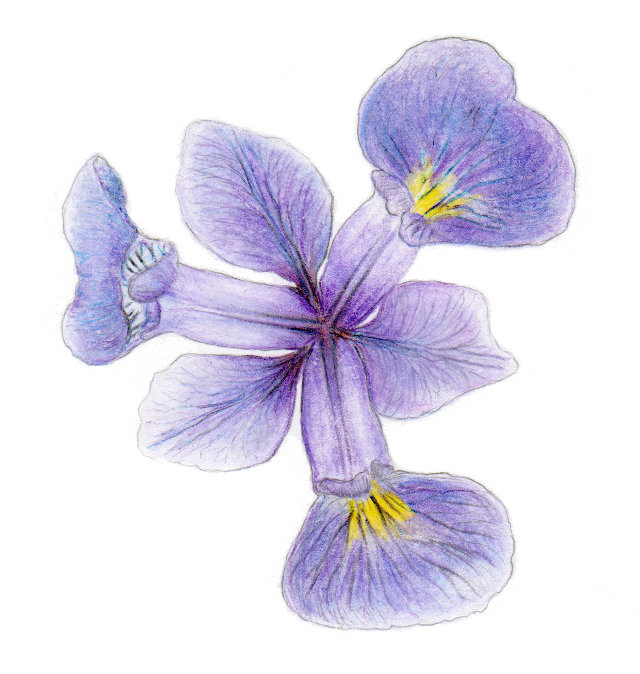

โดย ชิตพงษ์ กิตตินราดร | ธันวาคม 2562

บทที่ 1 บทนำ
บทที่ 2 Linear Regression Algorithm
บทที่ 3 Linear Regression Programming
บทที่ 4 Logistic Regression
บทที่ 5 Categorical Encoding
บทที่ 6 Feature Scaling
บทที่ 7 Bias and Variance
บทที่ 8
ภาพประกอบ Iris Versicolor โดยนฤมล กิตตินราดร